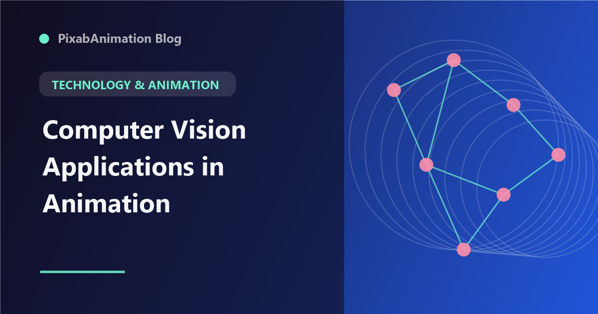

Computer Vision Applications in Animation

Computer vision technology has become a powerful tool in animation and motion graphics, enabling capabilities that were previously only possible with expensive specialized equipment. From markerless motion capture to real-time facial tracking, computer vision is making advanced animation techniques accessible to all creators.
Markerless Motion Capture
Traditional motion capture requires specialized suits, markers, and studio setups. Markerless motion capture uses computer vision algorithms to track human movement from standard video footage. Tools like Move.ai, Plask, and DeepMotion analyze video and extract 3D skeletal data that can be applied to 3D characters. This technology dramatically reduces the cost and complexity of motion capture for animation projects.
Facial Tracking and Performance Capture
Computer vision-based facial tracking captures nuanced facial expressions from video input. Apple's ARKit, MediaPipe Face Mesh, and Epic Games' MetaHuman Animator provide real-time facial tracking that drives character expressions. For motion graphics, this enables animated characters that mirror the animator's performance, creating more natural and expressive results.
Object and Scene Tracking
Computer vision algorithms track objects and scenes through video footage, enabling precise integration of motion graphics with live-action content. Planar tracking tracks flat surfaces for screen replacements and signage. 3D camera tracking reconstructs the original camera movement for realistic 3D compositing. Object tracking follows specific items through footage for targeted effects.
Gesture Recognition for Interactive Animation
Gesture recognition uses computer vision to interpret hand and body movements as input for interactive animations. This technology powers interactive installations, AR experiences, and touchless interfaces where animation responds to user movement. For motion designers, gesture recognition opens new possibilities for interactive and experiential projects.